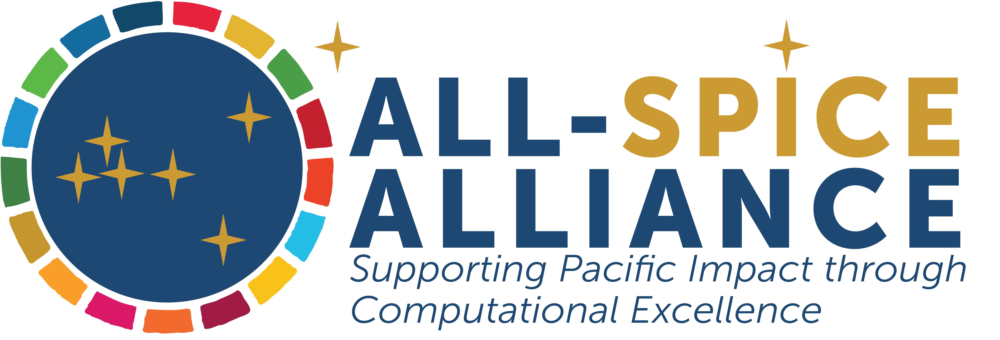

Final Project Guide
Connor Flynn | Victoria DelaCruz
 
Congrats!
You have made it to the end of the course, and now it is time for your final project :)
General Guidelines
The final project will be a screen recorded video of you going through a knitted Rmd that tells a story with data visualizations
- Requirements
- A minimum of 4 Data Visualizations generated from either the SDR-2023-Data.csv or SIDS-SDR-2023-data.csv
- Context
- Minimum of 3 sentences describing each visualization
- A narrative
- This cannot be a document of 4 visualizations that don’t tie into each other / make sense together.
- Supplemented by your written sentences, the visualizations must tell a story
- The code must be reproducible
- You need to be able to clear your environment (broom icon) and then hit the knit button to produce a knitted Rmd (similar to those on the course website). If there are any errors in your code, the knit button will prompt an error message instead of producing a document
- Project Suggestions
- We want you to be as creative as possible but here are a few suggestions if you could use some guidance
- Focus on a country and tell the story of that country within the SDG’s
- Give a brief textual description describing the country
- Add some info that is not related to the SDG’s to give the audience context
- What is the countries overall SDG Score?
- Make a plot of the 17 normalized sdg scores for that country
- Highlight the SDG the country has the most success in and the SDG where the largest challenges remain
- Explore the different indicators in each of these SDG’s
- Which cluster does the country fall into?
- When you increase the number of clusters, which cluster does the country fall into?
- For the scatter plots/linear regression in the statistics lesson:
- Does the country follow the trend or is it an outlier?
- Try a few combinations of SDG’s on the x and y axis
- How does the country compare to the other countries in it’s region?
- Does the country follow the trend or is it an outlier?
- Give a brief textual description describing the country
- Focus on an SDG and tell the story of that SDG
- What is the global distribution of that SDG’s scores?
- Visualize the SDG on a map
- What are the indicators in that SDG?
- What are they’re normalized scores?
- What does the global trend look like for that SDG?
- ↑ ➚ → ↓
- What do the trends look like for the indicators?
- ↑ ➚ → ↓
- What are the strongest predictors of that SDG’s normalized score? (random forest in machine learning)
- How about the strongest predictors of one of the indicators?
- Focus on a country and tell the story of that country within the SDG’s
- We want you to be as creative as possible but here are a few suggestions if you could use some guidance
Coding Guidelines
Awesome! So let’s think about the format of your R Markdown
First, we will want all the packages we use to be loaded in with library() in the very first code chunk
Next, we’ll want to read in the csv we’re using (either the SDR-2023-Data.csv or SIDS-SDR-2023-data.csv)
- To do this will assign the dataframe a name with
<-and use theread_csv()andhere()functions
Then we’ll clean the names of the columns with clean_names()
From here, you’re off to the races!
- Make maps
- Do some stats with scatter plots, linear regression, and correlation coefficients
- Make bar plots and histograms
- Ask questions about which countries cluster together
- Increase the number of clusters
- Predict an SDG score or indicator score and look at the most important features regarding the prediction
Be creative, Ask questions, Don’t be afraid to try, and Enjoy the process